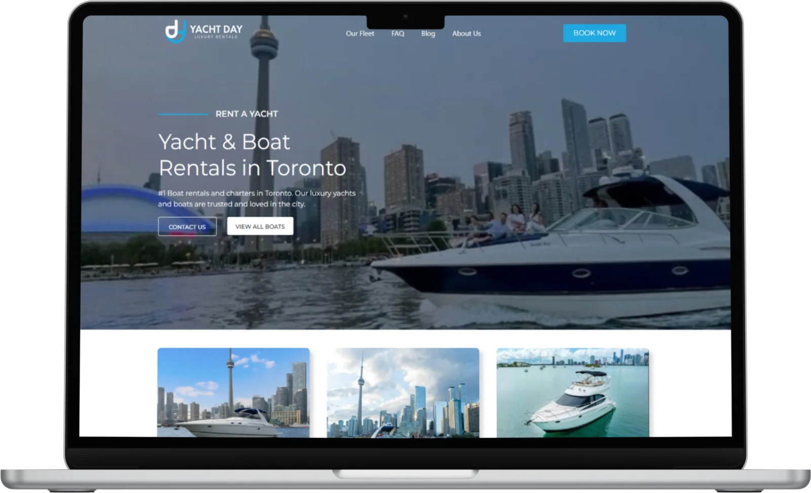
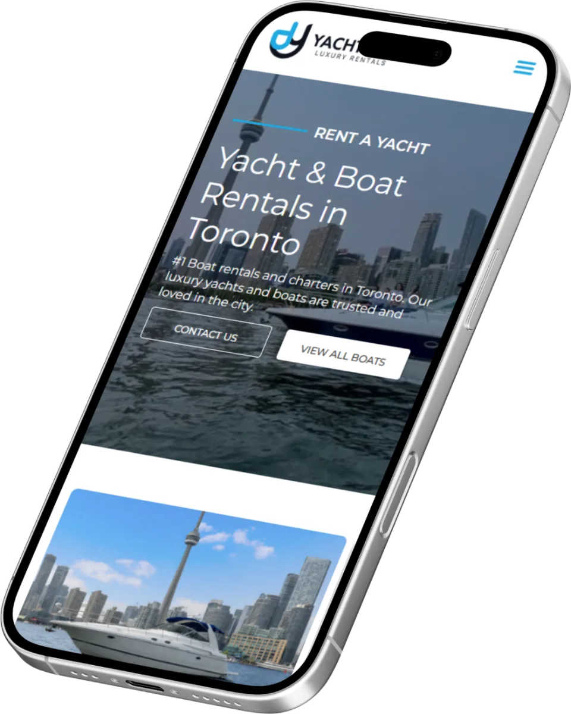

Software house · Rio de Janeiro
Transformamos ideias e processos em soluções digitais sob medida*
*Sites, sistemas, aplicativos e automações para empresas que querem vender mais, trabalhar melhor e crescer com tecnologia.
Ainda não sabe quanto custa? Faça uma estimativa em 1 minuto →
+120%
de tráfego orgânico em 6 meses
Yacht Day · Toronto


01SitesPresença digital que gera oportunidades.
02SistemasTire a operação da planilha e ganhe controle.
03AplicativosLeve sua ideia para o celular do cliente.
04AutomaçõesConecte ferramentas e reduza trabalho manual.
Atendimento próximoDesenvolvimento sob medidaSuporte depois da entrega